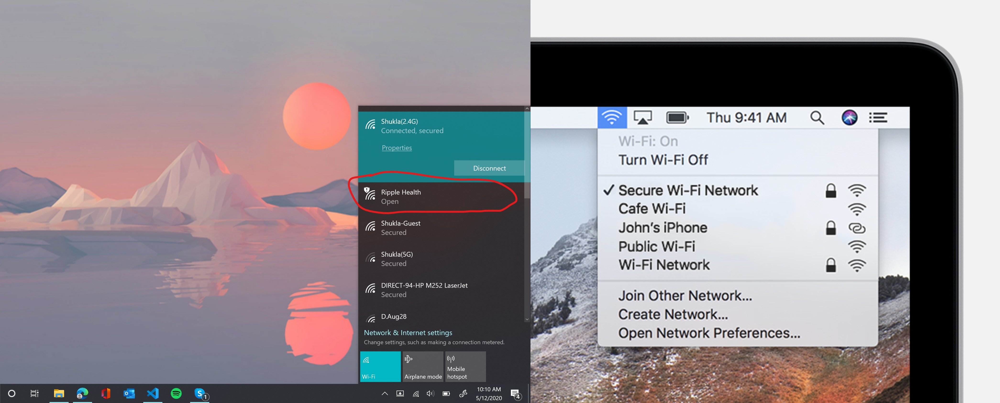

Step 4: Final Step...
This step is very important.
Please read the following beforehand.
If you need additional help, call 516-270-8383.
1. Click on the Wi-Fi Settings on your computer.

2. Click on and Connect to "Ripple Health" Wi-Fi
(wait until loaded)
3. Press the Button Below.